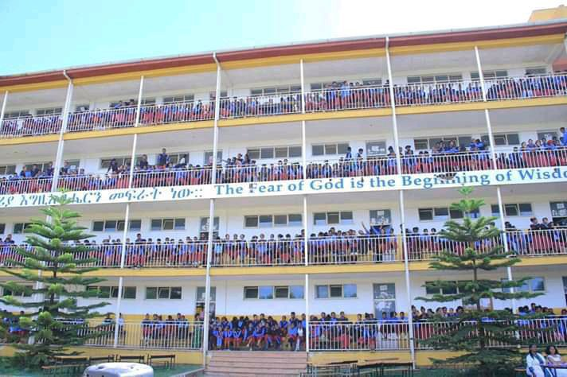

I am Betel Tagesse who is a 20years old 3rd year software engineering student at Addis Ababa institute of technology. I have always dreamt of becoming a tech student so that i can develop a different softwares. Though i did not take ICT subject in our school properly, i used to study programming languages in summer time. Since i am now studying in Addis Ababa university, i have a great opportunity to explore different things. i have teamed up with great students to do projects where i believe i got so much experience and friends. I also help young students who have passion about software related topics in summer time.
This is my school where i learned since kinder garten upto senior year of highschool. It is called vision academy and it has two branches in Addis Ababa and Hossana.
My school life
During my time at vision School I have been given the opportunity to participate in a variety of activities. Having the chance to be a part programming teams has benefited me and impacted my life in many ways. I believe that having the opportunity to compete in highschool programming activities is extremely important and beneficial to students. A student can learn so many valuable lessons from those around them. Throughout high school, I have learned to work with different personalities in teammates. I have found that not one teammate is the same. The ability to adjust to different people in a competitive environment will be valuable in my future of school, work.
During my time at vision School I have been given the opportunity to participate in a variety of activities. Having the chance to be a part programming teams has benefited me and impacted my life in many ways. I believe that having the opportunity to compete in highschool programming activities is extremely important and beneficial to students. A student can learn so many valuable lessons from those around them. Throughout high school, I have learned to work with different personalities in teammates. I have found that not one teammate is the same. The ability to adjust to different people in a competitive environment will be valuable in my future of school, work.
My document
Here are my highschool grades as well as the national examination results. I believe they will meet the minimum requirements to get the job here.
| 9th | 10th | 11th | 12th | |||||
|---|---|---|---|---|---|---|---|---|
| 1st | 2nd | 1st | 2nd | 1st | 2nd | 1st | 2nd | |
| Amharic | 81 | 90 | 88 | 99 | 100 | 96 | 84 | 80 |
| English | 99 | 100 | 90 | 83 | 95 | 93 | 93 | 88 |
| Maths | 95 | 99 | 90 | 93 | 91 | 92 | 98 | 100 |
| Biology | 91 | 91 | 93 | 97 | 88 | 84 | 81 | 80 |
| Chemistry | 100 | 100 | 88 | 89 | 93 | 90 | 89 | 100 |
| Physics | 98 | 97 | 95 | 99 | 93 | 90 | 92 | 98 |
| Civics | 90 | 91 | 80 | 82 | 85 | 89 | 84 | 90 |
| History | 90 | 81 | 83 | 88 | - | - | - | - |
| Geography | 100 | 81 | 92 | 92 | - | - | - | - |
| IT | 97 | 93 | 92 | 80 | 99 | 95 | 88 | 80 |
| HP | 88 | 74 | 92 | 83 | 98 | 83 | 83 | 98 |
| Average | 95.5 | 96 | 93 | 94 | 98 | 97 | 91 | 98 |
| Rank | 3 | 2 | 3 | 3 | 1 | 1 | 3 | 4 |
Lastly this is my transcript from 9th to 12th grade. I believe it will meet the requirements too.